Evolución de los sistemas operativos
Usar un computador no siempre fue tan fácil. Los sistemas operativos surgieron como una necesidad para poder utilizar máquinas muy complejas en tiempos que se necesitaba personal muy especializado para poder operarlas. La evolución de los sistemas operativos estuvo, por lo tanto, muy ligada a las características y necesidades particulares de las máquinas disponibles. Resulta difícil hablar de los sistemas operativos sin referirse al mismo tiempo a la evolución del hardware, pues ambos aspectos han avanzado de la mano durante gran parte de la historia.
Este artículo describe algunos hitos en la evolución del software que conocemos como sistema operativo y destaca el surgimiento de conceptos que persisten en los sistemas operativos modernos. La división de generaciones es aproximada en cuanto a años, y esta guiada principalmente por los hitos que marcaron al hardware.
Prehistoria de sistema operativos


Primera Generación (1945-55): Tubos de vacío
Posteriormente al trabajo de Babbage, el desarrollo de máquinas programables quedó relegado al ámbito de la investigación científica, sin grandes aplicaciones prácticas. Como ha ocurrido con tantos otros inventos, fue el periodo de la Segunda Guerra Mundial el que vino a reimpulsar el interés en este tipo de máquinas.
Se empezaron a desarrollar las primeras máquinas electrónicas, como el Z3 de Konrad Zuse (1941), y la máquina de Atanasoff-Berry (1942). El flujo de cómputo de estas máquinas era controlado por switch electrónicos (relay), construidos mediante tubos de vacío (vacuum tube). Al estar compuestas por cientos o miles de estos tubos, no era extraño que uno o varios fallaran durante la operación. Algunas de estas máquinas eran programables, si bien no todas eran de "propósito general" ó Turing-complete.
En 1944, un grupo de científicos en Bletchley Park, Inglaterra, entre los que se encontraba Alan Turing, construyó el computador Colossus, cuyo modelo más conocido, el Colossus Mark 2, utilizaba 2400 tubos de vacío. Este computador, si bien, tampoco era Turing-complete (lo que demuestra que no basta tener a Alan Turing para ser Turing-complete) ya que fue diseñado para una tarea criptográfica particular, sí era programable mediante cintas de papel. Fue importante en el proceso de decriptación del criptosistema alemán Lorenz.
En 1946, William Mauchley y J. Presper Eckert construyeron, en la Universidad de Pennsylvania uno de los primeros computadores programables de propósito general: el ENIAC (Electronic Numerical Integrator and Computer). Poseía 20000 tubos de vacío, pesaba 27 toneladas, ocupaba 167m2 y consumía 150kW de electricidad. Su dispositivo de entrada era un lector de tarjetas perforadas y su salida era un perforador de tarjetas (IBM 405). Poseía un clock de 100kHz, y utilizaba 20 registros de 10 dígitos binarios. No existía un lenguaje de programación, ni siquiera assembler, de manera que toda la computación era descrita en las tarjetas perforadas mediante código de máquina.
Segunda Generación (1955-65): Transistores y Sistemas Batch
La creación de los transistores en los años 1950 revolucionó la construcción de los dispositivos electrónicos reduciendo drásticamente las tasas de falla respecto al hardware construido con tubos de vacío y aumentando la velocidad de respuesta. Se empezaron a construir grandes computadores basados en transistores, conocidas como mainframes. Debido a su costo de construcción, un computador de este tipo era solamente accesible para grandes corporaciones, gobiernos y universidades.
La operación de un mainframe requería la colaboración de varios actores. Un mainframe ejecuta jobs (trabajos), que consisten en el código de un programa, o una secuencia de programas. Los programas se ingresan mediante tarjetas perforadas y se escriben en lenguaje assembler. En 1953, John W. Backus, de IBM, propone una alternativa para hacer más práctica la descripción de programas en lugar de assembler y desarrolla el FORmula TRANslating system, conocido como lenguaje FORTRAN, junto con una herramienta para hacer la traducción hacia assembler llamada compilador. Este trabajo le otorgaría el Turing Award en 1977.
Un programa escrito en FORTRAN sobre tarjetas perforadas es entregado como input a un lector de tarjetas. El lector de tarjetas escribe sobre una cinta que se entrega a la máquina principal, la cual ejecuta las instrucciones, proceso que podía tardar horas dependiendo de la complejidad del cómputo, y escribe el resultado sobre otra cinta de salida. La cinta de salida es leída por otro dispositivo capaz de imprimir el contenido de la cinta a un papel. En ese momento termina la ejecución del job.
Notemos que durante el tiempo que un dispositivo está leyendo las tarjetas perforadas, tanto el dispositivo procesador como el dispositivo de salida no están haciendo ningún trabajo útil. Dado el costo del equipamiento era poco conveniente tener estas unidades en espera mientras se traduce una tarjeta perforada a una cinta magnética. Es por esto que se desarrollaron soluciones como el sistema de procesamiento batch, o procesamiento por lotes. En este modelo, un programador entrega sus tarjetas perforadas a un operador (otra persona) que se dedica a ingresar las tarjetas a una unidad lectora de tarjetas (IBM 1402). Cuando hay una cantidad suficiente de trabajos, el operador toma la cinta de salida y la traslada (físicamente) a un dispositivo procesador como el IBM 1401 (3 registros, word de 6-bit con codificación BCD) o el más poderoso IBM 7094 (7 registros, word de 36-bit, y espacio de direcciones de 15-bit: 32768 words). El operador carga un primer programa (algo similar a un sistema operativo) que prepara al computador para leer una serie de jobs desde la cinta. Mientras el dispositivo procesador realiza las labores de cómputo, el IBM 1402 podía seguir leyendo el siguiente conjunto de tarjetas. La salida del dispositivo procesador iba a una cinta magnética de salida. El operador nuevamente debe tomar esta cinta, llevarla a un dispositivo impresor (IBM 1403) que transfiera el contenido de la cinta magnética a papel de manera offline. Esto es, no conectado al dispositivo procesador.

Este tipo de computadores se usó principamente para cómputo científico y de ingeniería. Los programas que permitían a estos computadores procesar secuencialmente una cantidad de jobs fueron algunos de los primeros en cumplir la tarea de un sistema operativo, como FMS (FORTRAN Monitor System, básicamente un compilador de FORTRAN), y el sistema del IBM 7094, IBSYS.
Tercera Generación (1965-1980): Circuitos Integrados y Multiprogramación
En los años 1960s, los mainframes de IBM (International Business Machines Corporation), la compañía constructora de equipamiento computacional más importante de la época, requerían cada uno un software y periféricos distintos para funcionar, ya que las instrucciones no eran compatibles. Un programa hecho para un modelo debía ser reescrito ante la introducción de un nuevo modelo de hardware. La compañía decide unificar el hardware bajo una familia llamada System/360. Ésta fue la primera línea importante basada en la nueva tecnología de circuitos integrados capaz de integrar grandes cantidades de pequeños transistores, lo que proporcionaba una enorme ventaja precio/rendimiento respecto a los transistores tradicionales.
OS/360, y la multiprogramación
La idea de tener una línea de hardware mutuamente compatible y de propósito general requería un sistema capaz de funcionar en todos los modelos. Este sistema fue el OS/360. El software resultante resultó enormemente grande (millones de líneas de assembler) y complejo de desarrollar, con numerosos bugs, en tiempos en que la ingeniería de software no se desarrollaba como disciplina aún. El director del proyecto Fred Brooks describió sus experiencias en el libro "The Mythical Man-Month", un clásico de la ingeniería de software. Sus contribuciones a esta nueva disciplina le valieron el otorgamiento del Turing Award en 1999.


A pesar de todos sus defectos, OS/360 fue ampliamente usado, e introdujo algunas ideas clave en los sistemas computacionales. Sistemas como el IBM 7094 eran máquinas que procesaban un trabajo simultáneamente. Si alguna instrucción de ese trabajo requería una lectura de cinta, o alguna operación de I/O, la CPU debía esperar sin hacer nada (idle) hasta que la operación terminase. Los trabajos científicos suelen ser intensivos en cómputo (CPU-bound), por lo que esto no era un problema. Sin embargo las aplicaciones comerciales requerían operaciones de I/O el 80% a 90% de las veces (I/O-bound) por lo que gran parte del tiempo la CPU se encontraba idle.
La solución fue dividir el espacio de memoria en regiones, y asignar un espacio distinto a cada job. Se introdujo un mecanismo que permitiera que, cada vez que un job estuviese esperando una operación de I/O, el sistema permitiera que otro job pudiese ocupar la CPU. De esta manera, si hay suficiente jobs en la memoria, sería posible mantener a la CPU trabajando casi el 100% del tiempo. Este mecanismo fue un enorme avance que ocupamos hasta el día de hoy, y se llama multiprogramación.
Implementar multiprogramación requiere que cada job pueda funcionar de manera aislada de los demás. Se agregó en el hardware el mecanismo necesario para proveer esta protección y evitar que un job malicioso pudiese leer o escribir en memoria asignada a otro job.
Una segunda característica introducida fue la integración de los periféricos como el lector de tarjetas, y la automatización de la lectura. De esta manera, una vez que un job terminaba su ejecución, el sistema operativo podía leer el siguiente job que estuviera disponible y cargarlo en la partición libre. Esta técnica se conoce como spooling (Simultaneous Peripheral Operation On Line). Ya no se necesitaba un dispositivo separado, y un operador que trasladara cintas.
Timesharing para múltiples usuarios
Hasta el momento todo el avance había apuntado a mejorar los sistemas de procesamiento por lotes (batch). El programador entrega sus tarjetas, y espera hasta obtener un resultado. Por supuesto, los programadores también cometían errores y, una vez entregado el programa, debían esperar algunas horas hasta recibir el output que indicara que su código había fallado porque le faltaba un ;. Medio día perdido antes de corregir el error y reenviar el job. No había ningún tipo de interactividad con el sistema. Dada la cantidad de usuarios que deseaban utilizar el computador, asignar horas para que cada usuario interactuara directamente y de manera individual con el computador era tremendamente ineficiente, pues el computador pasaba la mayor parte del tiempo idle mientras el usuario ingresaba código. El modelo batch seguía siendo superior.
La siguiente innovación apuntó a mejorar esta situación. Si un usuario escribe código durante un minuto, y luego piensa (o se para, o toma café) durante 20 segundos, se podría permitir a otro usuario que interactuara con el computador durante esos 20 segundos. La misma idea de la multiprogramación, sin embargo los humanos no son tan rápidos para cambiar de posición frente al teclado. Se le asignó entonces un terminal (consola) online a cada usuario: una cantidad de dispositivos con teclado conectados al mismo sistema, y se configuró para que, en cuanto un terminal dejaba de recibir comandos o ejecutar algún trabajo, el sistema pasara a atender al siguiente terminal. De esta manera, si un usuario no estaba interactuando con el computador, el procesador podía atender a otro. Nacieron desde aquí los sistemas de timesharing ("compartición" de tiempo).
Construir un sistema de timesharing era inviable en los computadores previos a esta época, ya que se requería almacenar el estado de un proceso y recuperar el estado del proceso siguiente (esto se llama context switch o cambio de contexto) lo que podía ser costoso en tiempo. Sin embargo, la tecnología de esos años ya había evolucionado para permitir que este método fuera viable. Los sistemas consultaba alternadamente a cada terminal si éste tenía un comando que ejecutar, lo que se conoce como polling. Un problema, aún no resuelto en estos sistemas, era que si un usuario enviaba un trabajo largo de tipo CPU-bound (una compilación, un cálculo matricial, ordenar miles de registros, …), los demás usuarios tendrían que esperar hasta que este proceso terminara antes de obtener su espacio (slice) de tiempo. Este problema sería resuelto en los sistema posteriores con la introducción del multitasking expropiativo (preemptive multitasking) en que los trabajos reciben slices de tiempo definidas para ejecutar antes de entregar el turno forzosamente al siguiente.
El primer sistema de propósito general que permitía timesharing fue CTSS (Compatible Time Sharing System), desarrollado en MIT en 1961 sobre un IBM 7094. Si bien el problema de protección de datos entre usuarios no estaba resuelto y los usuarios debían tener cuidado de no alterar el trabajo de otros, CTSS introdujo un tipo de interactividad que no había sido posible anteriormente.
MULTICS: una nube de cómputo del pasado
Ante las posibilidades que prometía el timesharing MIT, Bell Labs, y General Electric, deciden crear un sistema que soporte cientos de usuarios. De la misma manera que múltiples casas podían tener acceso a la red eléctrica, en este sistema múltiples usuarios tendrían acceso a tiempo de cómputo (en la actualidad esto se llamaría "Computing Time as a Service") con tan solo conectarse a este mainframe (una nube de cómputo). El sistema fue bautizado como MULTICS (MULTiplexed Information and Computing Service).
MULTICS tuvo un éxito parcial. Además de ser escrito en PL/I, un lenguaje poco popular y con un compilador deficiente, el proyecto resultó ser sumamente ambicioso para la época (como la máquina de Babbage) y demasiado complejo, lo que demoró el desarrollo al punto que Bell Labs y General Electric abandonaron el proyecto. MIT persistió y el sistema eventualmente fue terminado. Honeywell, la compañía que continuó las operaciones de General Electric en el área de los computadores, lo adquirió y consiguió suficientes clientes para hacerlo viable. No alcanzó mucha popularidad pero su desarrollo tuvo una gran influencia en sus sucesores.
UNIX: una simplificación de MULTICS
El desarrollo de la tecnología de transistores en circuitos integrados cada vez más pequeños y confiables (reliable) permitió que se construyeran computadores más pequeños tanto o más poderosos que los de la época. Se les llamó minicomputadores y uno de los más famosos fue el PDP-1 (Programmed Data Processor) de la compañía DEC (Digital Equipment Corporation), competidora de IBM y que fue comprada por Compaq (luego HP) en 1998. El DEC PDP-1 usaba words de 18-bit y soportaba 4096 words, con ciclos de acceso a memoria de 5.35 usec. DEC construyó modelos sucesivos de la línea PDP, no compatibles entre sí, hasta el PDP-16.
En Bell Labs, 1969, Ken Thompson y Dennis Ritchie (1941-2011), dos de los científicos que habían trabajado en MULTICS decidieron desarrollar una versión "reducida" de MULTICS para un PDP-7 que no estaba siendo usado. Esta versión tendría un diseño mucho más simple y en sus inicios soportaba solamente a un usuario (uni-task) en contraposición a MULTICS que era multi-task. Este trabajo fue bautizado como UNICS por UNIplexed Information and Computing Service como un juego de palabras respecto a MULTICS, y finalmente simplificado como UNIX.
La versión original de UNIX, para el PDP-7 y posteriormente para el PDP-11 estaba escrita en assembler. Fue en este sistema que se decidió reescribirlo en otro lenguaje de más alto nivel. Inicialmente se consideró el lenguaje B, una versión simplificada de BPCL, otro lenguaje ya existente. Sin embargo, B no podía aprovechar todas las características del PDP-11, y se utilizó otro lenguaje desarrollado por Dennis Ritchie: el lenguaje C, concebido como un sucesor de B. En 1972, Dennis Ritchie reescribe UNIX en el lenguaje C. De esta manera UNIX se convirtió en uno de los primeros sistemas operativos masivos en ser implementado en un lenguaje de mayor nivel que assembler, y el desarrollo de C continuó estando íntimamente ligado al kernel de UNIX. Thompson y Ritchie obtuvieron el Turing Award en 1983.
 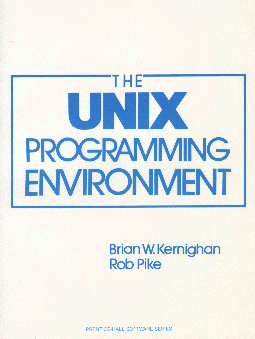
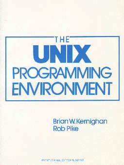  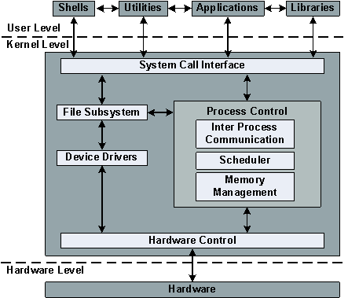
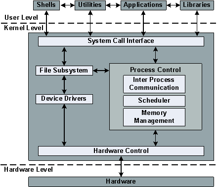El código fuente de UNIX estaba disponible públicamente lo que permitió a distintas instituciones y universidades desarrollar su propia versión para sus sistemas, cada uno inspirado en los mismos principios pero incompatibles entre sí. De estas versiones, dos de las más importantes que perduraron fueron la versión comercial de AT&T llamada System V (1983), y la versión de la Universidad de California en Berkeley, BSD (Berkeley Software Distribution, 1977).

Bajo esta situación no era posible escribir programas que funcionaran correctamente bajo las distintas versiones de UNIX. Para ello, la IEEE propuso una interfaz estándar de llamadas al sistema (syscalls) conocida como Portable Operating System Interface ó POSIX. La X viene del hecho que se tomó la interfaz existente en UNIX como base para la propuesta (es por esto que la mayoría de las llamadas suenan UNIX-like). Al implementar POSIX (o ser "POSIX-conformant"), los sistemas se hicieron más interoperables. Más aún, otros sistemas operativos no basados en UNIX también han implementado POSIX (ejemplo).
GNU, el software libre, y Linux
En 1983, todas las versiones de UNIX utilizaban licencias comerciales. En MIT, Richard Stallman inicia el proyecto GNU (GNU is Not UNIX, un acrónimo recursivo) con el objetivo de desarrollar una versión completamente gratuita y de código abierto de un sistema "UNIX-like". Como parte de su proyecto se definió la GNU General Public License, GPL, se publicó el GNU Manifesto y se desarrollaron múltiples herramientas como gcc (GNU Compiler Collection), glibc (GNU C Library), coreutils (GNU Core Utilities), binutils (GNU Binary Utilities), bash (GNU Bash Shell), y el entorno de escritorio GNOME (originalmente GNU Network Object Model Environment). Sin embargo el microkernel, denominado GNU Hurd (donde "Hurd" se define como Hird of Unix-Replacing Daemons, y "Hird" como Hurd of Interfaces Representing Depth, y que en el fondo suena similar a herd of GNUs), demoró en ser terminado (aún al año 2018 no hay una versión 1.0).
En 1987, Andrew S. Tanenbaum desarrolló un clon de UNIX llamado MINIX con fines educacionales (POSIX-compliant), un microkernel modular de código abierto con la capacidad de detectar y reemplazar dinámicamente módulos defectuosos. Todo en 13000 líneas de código.
En 1991, ante la ausencia de un kernel gratuito de UNIX, y bajo la inspiración de MINIX, Linus Torvalds desarrolla un clon monolítico "just for fun", al cual llama Linux e incluye gran parte de las herramientas desarrolladas por el proyecto GNU. Los puristas suelen denominar al sistema operativo GNU/Linux, pues se trata de un "kernel Linux con herramientas GNU", de la misma manera que GNU/Hurd sería un kernel Hurd con herramientas GNU".


Arquitectura simplificada del kernel de Linux, by ScotXW Own work, CC BY-SA 4.0
En 1992, Andrew S. Tanenbaum publicó un mensaje en el newsgroup comp.os.minix con el subject "Linux is obsolete", haciendo referencia a la naturaleza monolítica del recientemente publicado Linux en contraposición a la arquitectura microkernel de MINIX. Este mensaje marcó el inicio de un interesante y clásico debate conocido como Tanenbaum-Torvalds debate.
 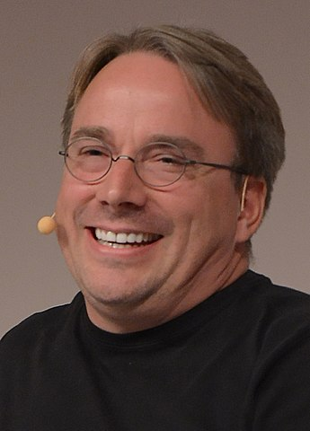
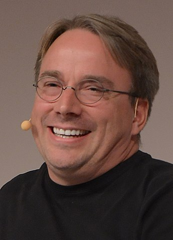Linus Torvalds, imagen de Krd, CC BY-SA 4.0
Con el tiempo se desarrollaron múltiples distribuciones de Linux. Si no está seguro qué distribución de Linux utilizar, aquí puede encontrar una guía.
Cuarta Generación (1980-Presente): Computadores personales
El desarrollo tecnológico de los circuitos integrados llegó al nivel conocido como VLSI (Very Large Scale Integration), capaz de integrar hasta 1 millón de transistores en un chip de 1cm2, lo que permitía hasta 100000 celdas lógicas. Surgieron sistemas computacionales de uso personal denominados microcomputadores, que en principio no eran tecnológicamente muy superiores al PDP-11, pero a un precio notablemente inferior.
Intel 8080, CP/M y el despegue de los microcomputadores
En 1974, Intel presenta el chip Intel 8080, una CPU de propósito general de 8-bit con un clock de 2MHz, sucesora del 4004 y el 8008, los primeros microprocesadores del mercado. Fue parte del popular MITS Altair 8800, que dió inicio a la era de los microcomputadores.

Intel deseaba un sistema operativo propio para el Intel 8080, por lo cual Gary Kildall construyó un sistema operativo basado en disco (contenido en un floppy disk de 8") conectado al 8080, y llamado CP/M (Control Program for Microcomputers). CP/M era un sistema single-task de 8-bit y capaz de utilizar hasta 64 KB de memoria. Si bien el sistema fue adoptado por Intel, no le veían mucho futuro a un sistema operativo residente en disco, y los derechos quedaron en manos de Gary Kildall quien formó la compañía Digital Research Inc. para desarrollar y vender CP/M. Digital Research adaptó CP/M para diversos microcomputadores usando el Intel 8080, pero también para otros microprocesadores de la época como el Zilog Z80, dominando el mercado durante unos 5 años. En este periodo se desarrollaron versiones multitasking y de 16-bit. Aplicaciones que surgieron bajo CP/M fueron WordStar (procesador de texto), dBase (base de datos), Multiplan (planilla de cálculo), y Turbo Pascal (IDE y compilador para Pascal).
IBM PC y la masificación de Microsoft DOS
IBM, por su parte, que había dominado el mercado de los mainframes se estaba quedando atrás en el nuevo mercado de los microcomputadores y empezó a desarrollar su propia versión: el IBM Personal Computer (IBM PC) basado en el Intel 8088 de 16-bit, 4.77MHz de clock, y hasta 256 kB de RAM. En 1980, IBM contactó a una pequeña compañía de nombre Microsoft fundada por Bill Gates y Paul Allen en 1975, y conocida por desarrollar un intérprete del lenguaje BASIC para el popular Altair 8800. Sin embargo, IBM deseaba un sistema operativo completo, y Bill Gates les sugirió contactar a Digital Research, que con CP/M era el dominador absoluto de los sistemas operativos. La negociación con Digital Research fracasó al no llegar a un NDA (Non-Disclosure Agreement) respecto al IBM PC. Si bien las razones no son claras, se dice que Gary Kildall no quiso reunirse con IBM, que envió a Dorothy McEwen (co-fundadora de Digital Research, y su esposa) en su lugar, que no estuvo de acuerdo con el espacio de tiempo que se le otorgaba para desarrollar una versión de CP/M para el Intel 8088 (que sería el futuro CP/M-86, ya que el set de instrucciones era Intel 8086), o que simplemente no se llegó a acuerdo económico. Varios artículos discuten cómo ocurrió esta curiosa serie de eventos. (1), (2). Gary Kildall murió en 1994, a los 52 años, bajo circunstancias que tampoco quedaron totalmente claras (3), (4)
Lo cierto es que IBM regresó con Microsoft para solicitar el desarrollo de un sistema operativo para su IBM PC. Bill Gates adquirió un clon de CP/M de una compañía más pequeña aún llamada Seattle Computer Products (SCP). SCP también se encontraba construyendo un sistema basado en el 8088, y ante la demora en la salida de CP/M-86, uno de sus empleados, Tim Paterson había desarrollado en 4 meses un clon llamado QDOS (Quick and Dirty Operating System) que fue renombrado a 86-DOS. Microsoft logró un acuerdo con SCP para distribuir, y posteriormente adquirir todos los derechos sobre 86-DOS llamándolo MicroSoft Disk Operating System (MS-DOS). Este sistema operativo, junto al intérprete de BASIC fueron ofrecidos a IBM. Microsoft contrató a Tim Paterson para realizar algunas modificaciones y finalmente el IBM PC fue lanzado junto al sistema operativo renombrado por IBM como PC-DOS. Debido a que, en el fondo, PC-DOS había nacido como un clon de CP/M y para evitar problemas legales, IBM eventualmente distribuyó su IBM PC también con CP/M-86. Sin embargo, CP/M-86 había llegado 6 meses tarde y en ese tiempo la popularidad de PC-DOS creció rápidamente.
 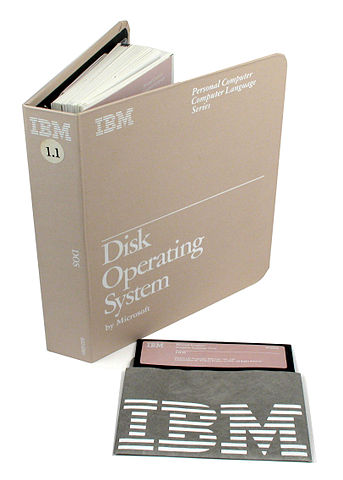
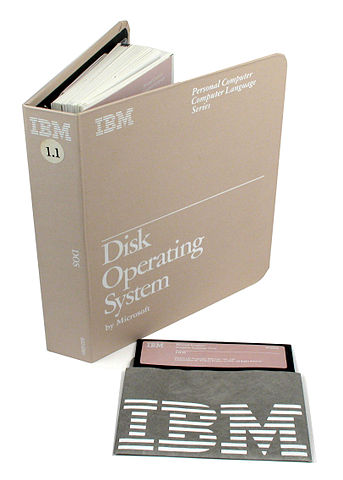 IBM PC 5150, Monitor IBM 5151, y Teclado IBM (1981). By Ruben de Rijcke - Own work, CC BY-SA 3.0
Pantalla de instalación de PC-DOS 4.0 (click para emulación).
Manual y diskette de instalación de IBM DOS 1.1
Microsoft, sin embargo, nunca entregó los derechos sobre MS-DOS, sino que solo entregó una licencia a IBM. El IBM PC fue tremendamente exitoso y, salvo la componente de arranque BIOS (Basic Input/Output System) que era propietaria de IBM, el resto era una arquitectura abierta (a diferencia de Apple que patentó componentes cruciales de su hardware). Esto permitió que rápidamente otros manufacturadores empezaran a desarrollar clones, popularmente llamados "IBM-compatible". Dado que el sistema operativo no era propiedad de IBM, cada constructor podía obtener una licencia de MS-DOS desde Microsoft para incluirla en su propio sistema. Esto posicionó a Microsoft como líder en el mercado de los sistemas operativos, y desplazó definitivamente a CP/M y Digital Research Inc. Años después, en 1996, Digital Research Inc., en ese tiempo parte de la empresa Caldera Inc. (y previamente de Novell), demandaría a Microsoft por prácticas anti-competitivas respecto a DR-DOS, un sucesor de CP/M-86, y en favor de sus productos MS-DOS, Windows 95 y Windows 98. Entre los argumentos reflotó la acusación que los sistemas de Microsoft, en el fondo, poseían código originado de CP/M que había sido clonado ilegalmente por SCP. Aún hasta 2014 y 2016 surgieron artículos académicos que investigaban si hubo realmente copia. El año 2000 se llegó a un acuerdo bajo el cual Microsoft Corp. compensó parcialmente a Caldera Inc. Parte del legado de CP/M en MS-DOS incluía el formato de nombre de archivos de 8.3 (8 caracteres para el nombre, y 3 para la extensión), y la manera de nombrar las unidades de disco como A:, B:, C:, …
En 1983, IBM lanza el IBM PC/AT, con el chip Intel 80286, de 16-bit, con clock de 6MHz, y con modo de protección para soportar multitasking. MS-DOS continuó siendo el sistema operativo de preferencia de los consumidores, distribuido como PC-DOS en las máquinas originales de IBM. Este soporte continuó con la introducción de los Intel 80386 (32-bit, 12 a 40MHz, 1985) y 80486 (32-bit, 16 a 100MHz, 1989). MS-DOS también evolucionó incorporando características de UNIX como multitasking y soporte de nombres largos de archivos. Eventualmente Microsoft produjo su propia implementación de UNIX llamada Xenix.
Doug Engelbart y la interactividad: "The Mother of All Demos"
Aún a inicios de los años 1980s, tanto MS-DOS como CP/M-86 seguían interactuando con el usuario a través de líneas de comando y teclado. Esto cambiaría debido a una investigación en interacción humano-computador que venía siendo desarrollada desde los años 1960s por Doug Engelbart (1925-2013) en el Stanford Research Institute (SRI), quien creó las GUI (Graphical User Interface) como medio de interactuar con el computador mediante un conjunto de abstracciones gráficas como ventanas, íconos, menúes, hipertexto (sí, hipertexto, ahí quedaste Tim Berners-Lee #conrespeto), y un novedoso dispositivo llamado mouse capaz de controlar un puntero en pantalla. Su trabajo, el sistema NLS (oN-Line System) fue presentado en un evento histórico que se conoció posteriormente como The Mother of All Demos (vale la pena verlo con los ojos de 1968). Tuvo tanta influencia que este tipo de interfaces se empezó a usar en el centro de investigación de Xerox PARC (Xerox Palo Alto Research Center) y en particular en su computador Xerox Alto. El trabajo de Doug Engelbart le otorgaría el Turing Award 1997 por su visión del futuro de la computación interactiva.
 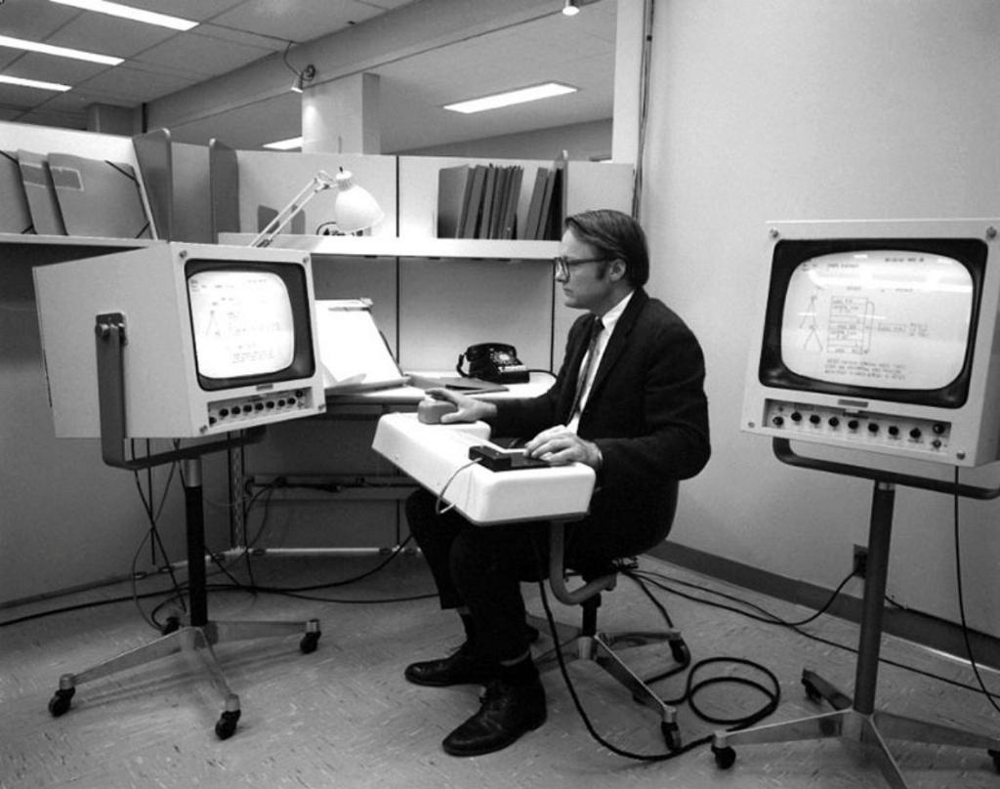
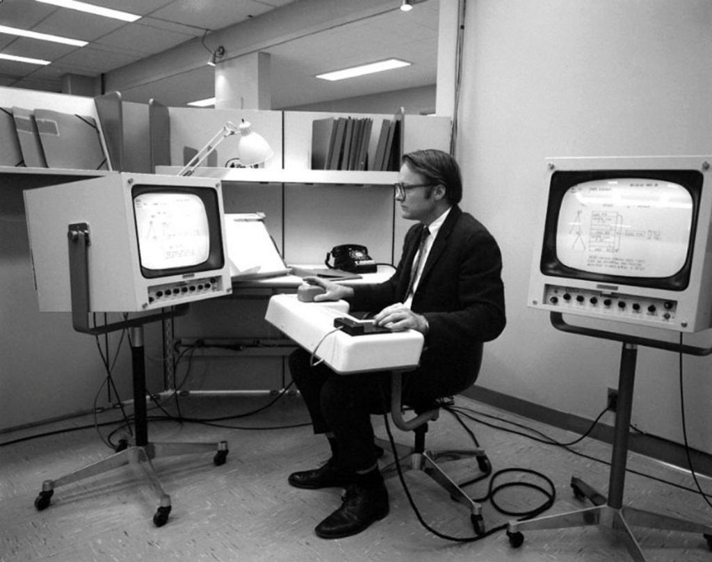Apple y la evolución de MacOS
No sería, hasta el desarrollo del Apple Lisa (1983) y el Apple Macintosh (1984), los primeros computadores personales en incluir una interfaz gráfica, que las GUIs se harían populares al acercar el uso del computador al público general e incorporar el concepto de user friendliness. Se dice que Steve Jobs, co-fundador de Apple Computer Inc. habría tenido la idea incorporar la GUI a su próximo computador (Lisa) luego de una visita que realizó en 1979 a Xerox PARC, sin embargo hay testimonios que indican que el plan de incorporar una GUI al Apple Lisa existía de manera previa a dicha visita (Steve Jobs y los ingenieros de Apple tenían suficientes motivos para visitar Xerox PARC, en cualquier caso, y la visita efectivamente ocurrió). En cualquier caso el Apple Macintosh fue ampliamente popular en particular en el ámbito del diseño gráfico.
Hasta 1999, el sistema operativo de los computadores de Apple (llamado ahora "classic mac OS") se trataba de un kernel monolítico desarrollado para chips Motorola 68k. Su última versión fue el Mac OS 9. El próximo kernel toma como punto de origen a Mach, una reimplementación de BSD Unix con arquitectura de microkernel desarrollado en Carnegie Mellon University. La compañía NeXT, fundada por Steve Jobs durante su periodo fuera de Apple, había desarrollado el sistema operativo NeXTSTEP a partir de Mach, y escrito en C y Objective-C. Cuando Apple adquirió NeXT (y a Steve Jobs de regreso), se introdujo el kernel híbrido XNU (XNU is Not Unix) combinando ideas del kernel Mach 2.5 y de UNIX BSD 4.3. Se incorporó código del kernel de NeXTSTEP (y su siguiente versión OPENSTEP), y del proyecto FreeBSD una implementación opensource de BSD UNIX. Con base en el kernel XNU se construyó el sistema operativo que se conoce como Darwin (opensource y POSIX-compliant), que junto con herramientas propietarias de Apple (como Finder y la interfaz gráfica Aqua) conformaron el sistema operativo Mac OS X.
 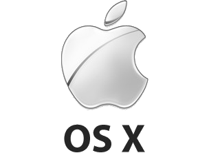
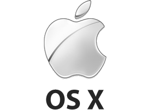
Arquitectura de OS X, by Utente:Sassospicco - Derivated work from Image:MacOSXArchitecture.svg, CC BY-SA 3.0
{kind=link}
Microsoft y la evolución de Windows
Fuertemente influenciado por el éxito del Apple Macintosh, a inicios de 1980s Microsoft planeaba un sucesor para MS-DOS que tuviera su propia GUI. Su primer intento fue un sistema administrador de ventanas llamado Windows 1.0 (1985) que funcionaba como una aplicación sobre MS-DOS. La versión que consiguió mayor adopción fue Windows 3.11, para sistemas de 16-bit. Fue en 1995, con el lanzamiento de Windows 95 y luego Windows 98, que se incorporó código para aprovechar las nuevas CPU de 32-bit, aun cuando parte del sistema operativo debía soportar aún aplicaciones de 16-bit por retrocompatibilidad. MS-DOS seguía siendo usado para iniciar el sistema y como soporte subyacente para aplicaciones antiguas.
Ya desde 1987, Microsoft había trabajado en conjunto con IBM para construir un sistema operativo con GUI. Este sistema se conoció como OS/2, sin embargo nunca alcanzó gran popularidad ante Macintosh y los mismos Windows 9x. Eventualmente Microsoft tomó parte del trabajo desarrollado para OS/2 y reimplementó Windows usando código completamente de 32-bit. Este nuevo sistema se llamó Windows NT (Windows New Technology), mientras OS/2 fue eventualmente abandonado por IBM.

Windows NT fue desarrollado bajo el concepto de portabilidad. Implementó preemptive multitasking, soporte para múltiples arquitecturas modernas como IA-32, MIPS y DEC-Alpha, soporte para Windows API y POSIX, e introdujo un nuevo sistema de archivos, NTFS. La línea de Windows NT continuó con Windows XP, Windows Vista, Windows 7, Windows 8, y Windows 10. Paralelamente se introdujo una línea para servidores con Windows 2000, Windows Server 2003, Windows Server 2008, Windows Server 2012, y Windows Server 2016.
 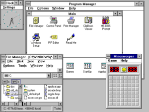 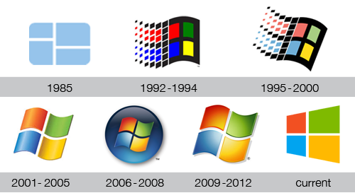
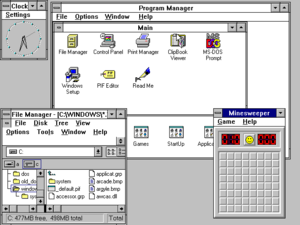 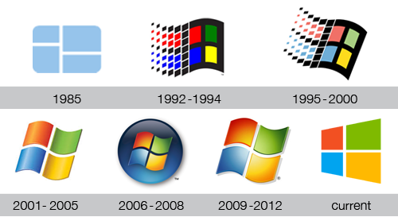 
Quinta Generación (1990-Presente): Computadores Móviles
Hasta 1993, los dispositivos telefónicos móviles no era más que dispositivos de comunicación que usaban sistemas embebidos, dedicados, para administrar su hardware. El concepto de utilizar estos dispositivos para realizar actividades más allá de la telefonía surgió con los dispositivos conocidos como PDA (Personal Digital Assistant), entre los cuales se encuentra el Apple Newton que incluía un sistema operativo Newton OS escrito en C++, y con un pionero uso de reconocimiento de escritura manual. Poseía una API para aplicaciones desarrolladas por terceros, sin embargo no obtuvo gran adopción.
Talvez el primer dispositivo llamado un smartphone fue el IBM Simon, con una interfaz de pantalla touch (con stylus) y un sistema operativo ROM-DOS, compatible con MS-DOS y desarrollado por la empresa Datalight. Su batería de una hora de duración no le permitió competir con los nuevos dispositivos.


Palm, Inc. y el Palm OS
Fue en 1997 que la ya extinta compañía Palm, Inc. popularizó los dispositivos PDA mediante su PalmPilot, y su sistema operativo Palm OS 2.0 como el primer sistema operativo móvil exitoso. Incorporaba el sistema Graffiti de reconocimiento de escritura manual, y el stack de protocolos TCP/IP para soportar sincronización por red en lugar de cable serial. Palm OS introdujo paulatinamente características modernas acorde a la evolución de los dispositivos como soporte para el stack WiFi (IEEE 802.11), Bluetooh, y desde 2004 con Palm OS 6.0 (Cobalt), un kernel con multitasking y protección de memoria. En 2009, Palm, Inc. intentó ponerse al día en la competencia por el mercado móvil con el desarrollo de webOS. Palm, Inc. sería adquirido por HP al año siguiente y el desarrollo de webOS no se vería impulsado hasta al menos dos años más cuando el código de webOS se publicó de manera abierta. Finalmente HP licencia el uso de webOS a LG para incorporarlo en sus dispositivos smartTV.
Nokia y SymbianOS
El éxito de Palm llevó a otros protagonistas de la telefonía móvil como Nokia a co-fundar y posteriormente adquirir completamente a Symbian Ltd.. El consorcio fundador incluía a Psion, una compañía que estaba detrás de EPOC, un sistema operativo single-user de 32-bit con preemptive multitasking del año 1998, que bajo Symbian se convertiría en Symbian OS cuya primera versión (6.0) fue utilizada en el Nokia 9210 Communicator. Symbian OS corría sobre procesadores ARM, una arquitectura RISC. En su mejor momento, Symbian OS fue el sistema preferido por manufacturadores como Samsung, Motorola, Sony Ericsson, y principalmente Nokia. Poseía un microkernel llamado EKA2 que soportaba preemptive multithreading, protección de memoria, y scheduling para tareas de tiempo real (RTOS). Poseía un diseño orientado a objetos y estaba escrito en C++. Symbian OS dominó gran parte del mercado de los sistemas operativos móviles hasta su abandono paulatino por Samsung, Sony Ericsson y eventualmente Nokia (que lo reemplazaría por Windows Phone), lo que lo hizo perder terreno ante la irrupción de iOS y Android.
 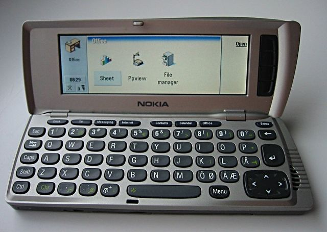 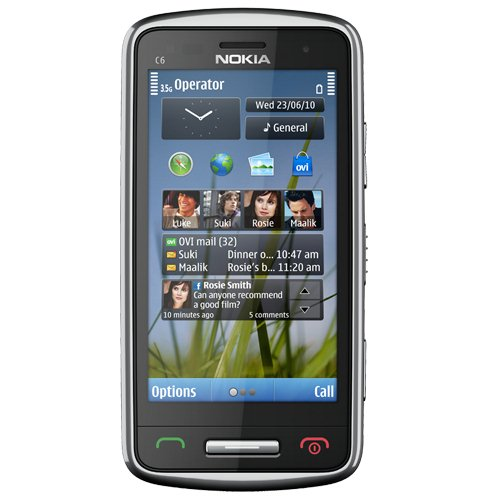
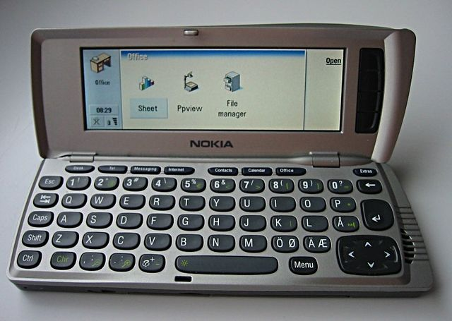 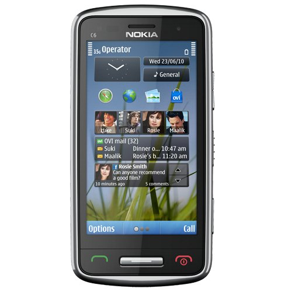 Durante los años 2005 al 2010 y previo a la consolidación de Android existieron diversos esfuerzos por generar una plataforma opensource basada en el kernel de Linux. Nokia tuvo su intento propio con Maemo, un kernel monolítico basado en Debian GNU/Linux y con interfaz basada en GNOME para arquitecturas ARM. Previo a la adopción de Windows Phone, Nokia abandona Maemo y, en conjunto con Linux Foundation e Intel crea la distribución MeeGo con la intención de servir de plataforma para dispositivos como smartphones, tablets, smartTVs y netbooks. MeeGo nace como una mezcla de las plataformas de Nokia (Maemo) y una que estaba desarrollando Intel (Moblin, que a su vez estaba basado en Fedora). Sin embargo, en 2011, cuando Nokia adopta Windows Phone, abandona MeeGo. A partir de MeeGo, Intel se une con Samsung y Linux Foundation para desarrollar Tizen. En una línea paralela, la compañía finlandesa Jolla aprovecha el código opensource de Mer, un fork de MeeGo y desarrolla Sailfish OS, un kernel monolítico con compatibilidad para Android mediante APIs, soporte para ARM y x86-64, y un fuerte énfasis en multitasking.
Microsoft y el Windows Phone
Microsoft había desarrollado desde 1996 un sistema operativo embebido llamado Windows CE (actualmente Windows Embedded Compact) diseñado para una especificación de plataformas incialmente denominado Pocket PC. Los primeros dispositivos con Windows CE se lanzaron en 2002. Windows CE contenía un kernel híbrido escrito en C y soportaba arquitecturas x86, ARM, MIPS y PowerPC. La serie de sistemas operativos móviles basados en Windows CE fue conocida como Windows Mobile (incluyendo el media player Zune) y fue desarrollado hasta 2010. Posteriormente Microsoft reimplementaría su sistema operativo móvil basado en la línea de Windows NT, dando inicio a Windows Phone, línea que fue descontinuada en 2017 debido al poco interés de los desarrolladores en generar aplicaciones para esta plataforma ante la dominancia de iOS y Android.
 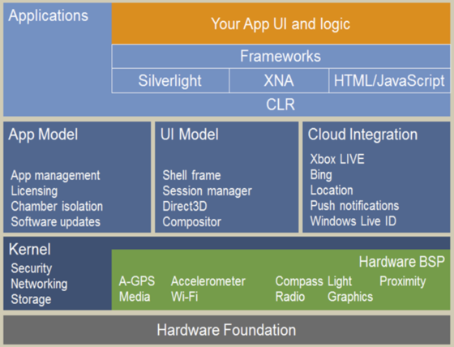
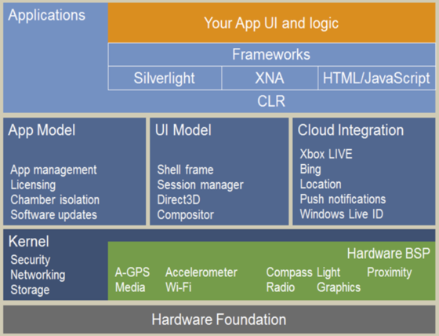 RIM y Blackberry OS
En 2002 la compañía canadiense Research In Motion (RIM) desarrolló su propia línea de dispositivos móviles conocidos como BlackBerry y su propio sistema operativo BlackBerry OS (RIM con el tiempo cambiaría su nombre a BlackBerry Ltd.). BlackBerry OS era un sistema multitasking con soporte para aplicaciones mediante la plataforma especial para dispositivos embebidos Java Micro Edition (JavaME). Incluía soporte para WAP, un stack de protocolos de comunicación para móviles que dejó de ser adoptado cuando los dispositivos móviles fueron suficientemente poderosos para procesar el tradicional stack TCP/IP. En 2010, BlackBerry OS fue reemplazado por BlackBerry 10, un sistema basado en el microkernel de tiempo real (RTOS) QNX. Desde 2016, los dispositivos producidos por BlackBerry empezaron a usar Android en lugar de BlackBerry 10, cuyo soporte ha sido anunciado al menos hasta 2019.
 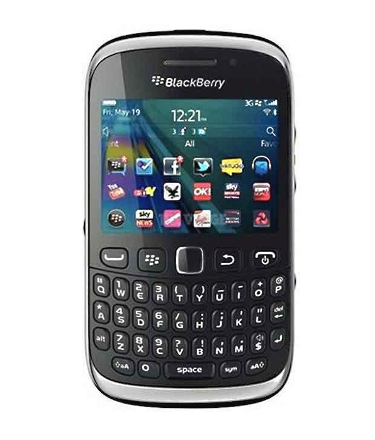 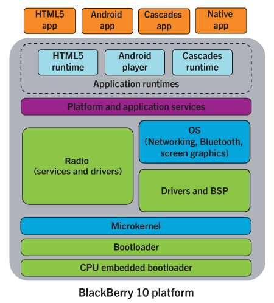
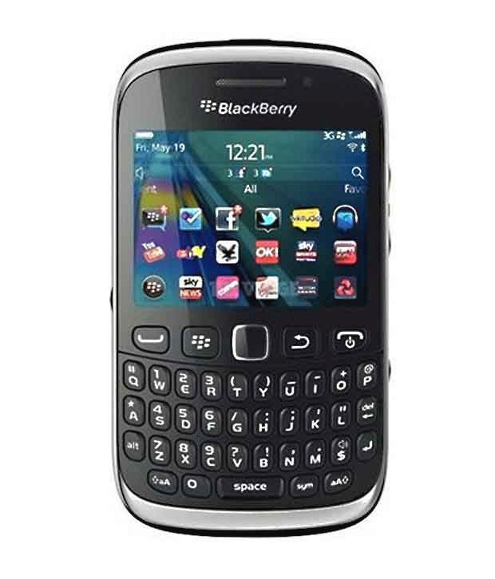 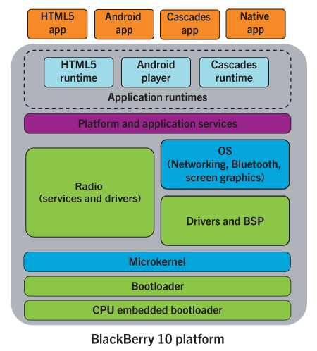 Apple: el iPhone y iOS
El año 2007 ocurrió la entrada de uno de los principales competidores cuando Apple presentó su iPhone junto con su sistema operativo iOS (originalmente iPhone OS). iOS, al igual que MacOSX se basa en el kernel híbrido XNU y el sistema operativo (UNIX-like) Darwin. Desde el año 2010, con iOS 4, el sistema añadió soporte de APIs para multitasking por parte de aplicaciones de usuario. Previamente el multitasking estaba restringido solo a ciertos servicios del sistema. La disponibilidad del iOS SDK (Software Development Kit) atrajo el desarrollo de múltiples aplicaciones nativas disponibles desde una tienda online (App Store), popularizando rápidamente el uso del iPhone y posicionándolo como uno de los principales competidores.
Android, la entrada de Google
Meses después del lanzamiento del primer iPhone, un conjunto de compañías lideradas por Google, incluyendo a HTC, Sony, Dell, Intel, Motorola, Samsung, LG, Nvidia, entre otros, forman la Open Handset Alliance (OHA). Con el soporte de OHA, Google lanza en 2008 la primera versión de Android, un sistema operativo monolítico (UNIX-like) de código abierto basado en el kernel Linux. Android inició su desarrollo bajo la compañía Android, Inc. fundada en 2003. El año 2005 Google adquirió Android, Inc. y fue bajo su alero que el equipo de desarrollo terminó la primera versión Android 1.0. De manera similar a App Store, Android lanzó el Android Market (más tarde Google Play Store), y el Android SDK para el desarrollo de aplicaciones (escritas principalmente en Java, y recientemente en Kotlin) para terceros. El soporte de OHA, integrado por importantes actores del mercado smartphone fue clave para posicionar a Android como el sistema operativo dominador en los dispositivos móviles desde el año 2010, con iOS como su único (y distante) competidor real.
A diferencia de Linux, el kernel de Android no utiliza la tradicional GNU C Library glibc, sino que utiliza una implementación alternativa de la biblioteca de C desarrollado por Google, llamada Bionic, la cual posee un menor memory footprint que glibc y fue diseñado para CPUs funcionando a menor frecuencia de clock (y por lo tanto, optimizada para menor consumo energético). Bionic, sin embargo, no implementa toda la interfaz POSIX, haciendo que Android sea Non-POSIX compliant.
Sources
- Tanenbaum, "Modern Operating Systems", 4th Ed. Sección 1.2.
- Wikipedia
- etc